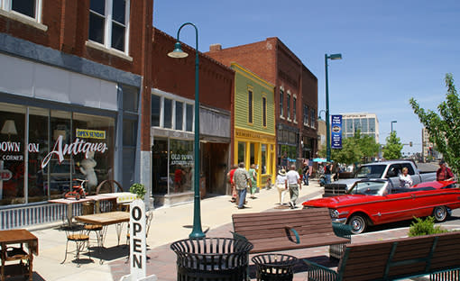

Storage Tips & Guides for Hutchinson, KS
Helpful advice on storage, moving, and keeping your belongings safe.
Why Storage Facility Security Matters (And What to Look For)
Not all storage facilities are equally secure. Here's what actually matters — cameras, lighting, access control, and more — and what to ask before you rent.
Read More →
Storage Solutions for Reno County Homeowners
From seasonal gear to renovation overflow, here's how Hutchinson homeowners use self storage to free up space at home.
Read More →
Moving to Hutchinson? Here’s What You Need to Know
Relocating to Reno County? Get practical tips on neighborhoods, local resources, and how self storage can make your move easier.
Read More →
How to Choose the Right Storage Unit Size
Not sure what size you need? From small closets to large garage-sized units, here's how to pick the perfect fit for your belongings without overpaying.
Read More →How to Protect Your Belongings from Kansas Humidity
South central Kansas humidity can damage stored items. Learn practical tips to protect furniture, electronics, and clothing in your storage unit.
Read More →Why Self Storage Makes Moving Easier
Whether you're downsizing, between homes, or relocating to Hutchinson, a storage unit can take the stress out of your move. Here's how.
Read More →
What Is Tenant Protection and Do You Need It?
Your homeowner's or renter's insurance might not cover items in storage. Learn why tenant protection plans are an affordable way to get peace of mind.
Read More →
Tips for Storing Items Long-Term
Putting things in storage for months or years? Learn how to properly pack, protect, and organize your unit so everything stays in great shape.
Read More →Ready to Reserve Your Unit?
Book online in minutes. No hidden fees, no long-term commitment.